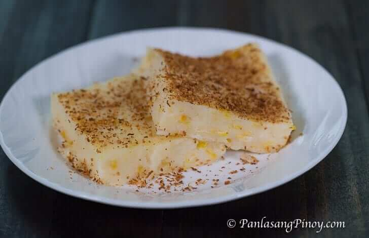

Maja Blanca
Home

Description
An easy Maja Blanca recipe, marvelously creamy, deliciously sweet.
Ingredients
- 4 cups coconut milk
- 3/4 cup cornstarch
- 14 ounces condensed milk
- 3/4 cup fresh milk
- 3/4 cup granulated suger
- 15 oz whole sweet kernel corn
- 5 tbsp toasted grated coconut
Steps
- Pour the coconut milk in a cooking pot and bring to a boil.
- Add the sugar, condensed milk, and whole sweet kernel corn then stir until all the ingredients are evenly distributed.
- Simmer for 8 minutes
- Combine the milk and cornstarch then whisk until the cornstarch is diluted
- Pour the fresh milk and cornstarch mixture in the cooking pot and stir thoroughly.
- Allow to cook while stirring until the mixture reaches your desired thickness
- Pour the mixture in a serving tray then arrange and flatten the top using a flat tool such as a wooden spatula
- Allow to cool down then refrigerate for at least 1 hour
- Garnish with toasted grated coconut (or latik if available)
- Serve cold. Share and enjoy!